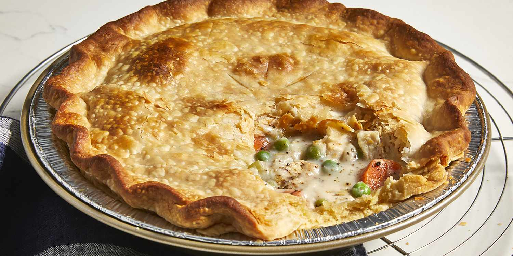

Chicken Pot Pie

Description:
Warm and hearty, chicken pot pie is a classic dish that combines tender chicken, flavorful vegetables, and a creamy sauce, all encased in a flaky pastry crust. It's a wonderful blend of flavors and textures that's sure to satisfy your taste buds.
Ingredients:
For the crust:
- 2 ½ cups all-purpose flour
- 1 cup unsalted butter, cold and cubed
- ½ teaspoon salt
- 6-8 tablespoons ice water
For the filling:
- 2 cups cooked chicken, diced
- 1 cup carrots, diced
- 1 cup frozen peas
- ½ cup celery, diced
- 1/3 cup onion, finely chopped
- 3 tablespoons butter
- 1/3 cup all-purpose flour
- 2 cups chicken broth
- 1 cup milk
- ½ teaspoon salt
- ¼ teaspoon black pepper
- ½ teaspoon dried thyme (optional)
- 1 egg (for egg wash)
Steps:
-
Prepare the Crust:
- In a large bowl, mix the flour and salt together.
- Cut in the cold butter using a pastry cutter or your fingers until the mixture resembles coarse crumbs.
- Gradually add ice water, 1 tablespoon at a time, and mix until the dough comes together. Divide it into two discs, wrap in plastic wrap, and refrigerate for about 30 minutes.
-
Prepare the Filling:
- In a large skillet, melt the butter over medium heat.
- Add the onions, carrots, celery, and peas. Sauté until the vegetables are slightly softened, about 5-7 minutes.
- Stir in the flour and cook for 1-2 minutes to remove the raw flour taste.
- Gradually add the chicken broth and milk, stirring constantly until the mixture thickens.
- Add the cooked chicken, salt, pepper, and dried thyme. Mix well. Remove from heat and let the filling cool slightly.
-
Assemble the Bake:
- Preheat your oven to 400°F (200°C).
- Roll out one of the chilled dough discs to fit the bottom of a pie dish. Place it in the dish.
- Pour the chicken and vegetable filling into the pie crust.
-
Add the Top Crust:
- Roll out the second dough disc and place it over the filling.
- Trim any excess dough and crimp the edges to seal the pie.
-
Bake:
- Beat the egg and brush it over the top crust for a golden finish.
- Cut a few slits in the top crust to allow steam to escape.
- Bake in the preheated oven for about 30-35 minutes, or until the crust is golden brown and the filling is bubbling.
-
Serve:
- Allow the chicken pot pie to cool slightly before serving. This will help the filling set.